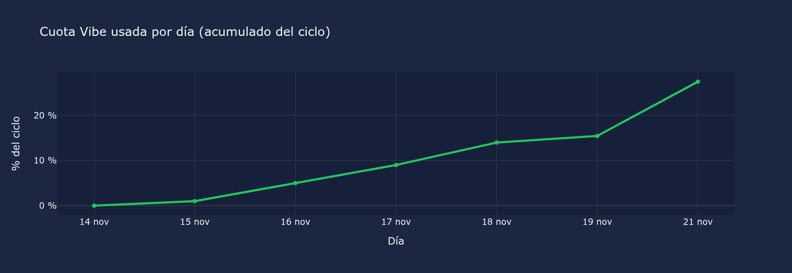
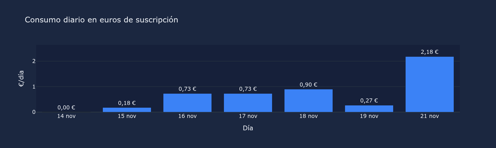
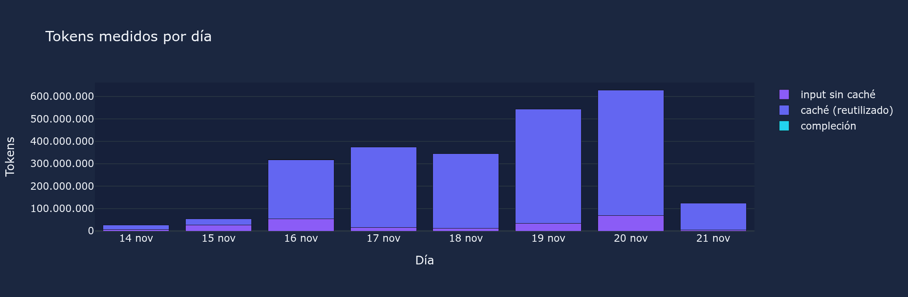

Plan Individual · 18,14 €/mes · presupuesto 255 € por ciclo · PAYG desactivado · reset 2026-12-01 · objetivo: aprovechar la cuota sin derrocharla y sin quedarse corto



Gráficos exportados como imagen desde los datos reales. Sin JavaScript ni CDN: la página es un HTML plano que puedes abrir desde cualquier sitio.
| Equipo | CPU | RAM | GPU / VRAM | Discos |
|---|---|---|---|---|
| ricardo-HP-Xubuntu (laptop) | Intel i3-6006U 2C/4T @ 2.0 GHz (Skylake) | 12 GB (11 GiB usables) | Intel HD 520 + AMD Radeon R5 M330 (2.048 MB dedicados) | / 81 GB (90 %) · /home 369 GB (93 %) |
| ricardoPC (escritorio) | AMD Athlon 200GE 2C/4T @ 3.2 GHz (Zen) | 13 Gi | NVIDIA RTX 3060 — 12.288 MiB (medido con nvidia-smi) | / 64 GB (31 %) · /home 679 GB (94 %) · 3 discos más |
HP medido in situ (lscpu/free/lspci/lsblk/df). ricardoPC medido por INFRA vía SSH con nvidia-smi.
26 vías identificadas, ordenadas por valor esperado frente a esfuerzo. Cada una con su ficha: cuantía, plazo, requisitos duros, encaje y fuentes con fecha de consulta.
Ver el mapa completo · Ficha ampliada: crédito fiscal I+D+i · Ficha #1: NLnet / Restack
Generado el 2026-11-21 a las 01:29 · datos de
usage.db, read_quota() y journalctl · cifras en formato
español (coma decimal, punto de miles).